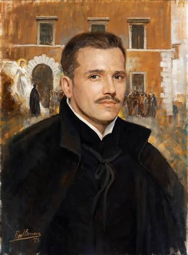

¿Quién fue?
Glicerio Landriani fue un colaborador de san José de Calasanz durante los primeros años de las Escuelas Pías. Se destacó por su entusiasmo, su trabajo como catequista y su dedicación a los niños y a los pobres.
Su historia refleja una transformación personal: pasó de buscar una carrera eclesiástica a entregarse generosamente al servicio de los demás.
Imagen de Glicerio Landriani:

Su vida
Estos son los momentos principales de la vida de Glicerio Landriani.
1 de marzo de 1588: Nacimiento
Nació en Milán, en una familia distinguida. Desde joven, él y su hermano Fabrizio deseaban servir a la Iglesia.
1610-1611: Conoce las Escuelas Pías
Conoció la obra de las Escuelas Pías y a su fundador, san José de Calasanz. Encontró entre los niños una vocación que marcaría su vida.
1611-1612: Escuchar al corazón
Buscó consejo y acompañamiento espiritual del Padre Domingo, lo que lo ayudó a conocerse mejor y a vivir de manera más consciente y solidaria.
31 de mayo de 1612: Se une a las Escuelas Pías
Glicerio y cinco amigos entraron a formar parte de las Escuelas Pías. Su entusiasmo y su deseo de acercar a los niños a Jesús lo convirtieron en catequista.
2 de julio de 1617: Comienza el noviciado
Inició su formación para ser religioso escolapio. Lo acompañó el beato Pedro Casani, su maestro.
15 de febrero de 1618: Muerte
Murió en Roma a los 29 años, después de dedicar su vida al servicio de los demás.
31 de mayo de 1931: Es declarado Venerable
Sus virtudes heroicas fueron aprobadas y fue declarado digno de veneración con el título de Venerable.
Su obra
Glicerio fue uno de los colaboradores más conocidos de san José de Calasanz durante los primeros años de su apostolado educativo en Roma.
Servicio a los niños
Propuso acompañar a los niños por las calles cuando regresaban a sus casas, preocupándose por su bienestar.
Catequesis y evangelización
Su labor como catequista enriqueció la obra evangelizadora de las Escuelas Pías. Deseaba que los niños conocieran a Jesús, vivieran el Evangelio y amaran a la Iglesia.
También presentó un plan al cardenal Federico Borromeo para que las escuelas fueran centros de evangelización y catequesis.
Su testimonio
Al llegar a Roma, Glicerio deseaba hacer carrera y llevaba una vida de riqueza y vanidad. Con el tiempo, respondió generosamente a su vocación y se entregó a ayudar al prójimo.
Su entusiasmo juvenil y su deseo de servir a los niños lo convirtieron en un catequista comprometido.
«Jesús y María tengan siempre ocupado todo el corazón de nuestro carísimo en el Señor, Abate Glicerio».
Estas palabras aparecen al comienzo de la única carta de Calasanz a Glicerio que se conserva, según el material consultado.
La Iglesia y las Escuelas Pías
Dentro de la Iglesia
El proceso de beatificación se inició el 16 de abril de 1895. El 31 de mayo de 1931 fue declarado Venerable, después de que se aprobaran sus virtudes heroicas.
Dentro de las Escuelas Pías
Entró en el grupo de Calasanz en 1612 e inició el noviciado en 1617. Contribuyó con su catequesis y su propuesta de acompañar a los niños hasta sus hogares.
Su legado
Su legado está relacionado con la entrega a los niños, la catequesis, la evangelización y la educación dentro de las Escuelas Pías.
Su ejemplo de servicio a los niños y a los pobres continúa formando parte de la memoria de la tradición escolapia.
Oración al Venerable Glicerio
Dios grande y misericordioso,
que has hecho del venerable Glicerio un instrumento dócil para evangelizar a los niños;
haz que su pronta beatificación contribuya a realizar con mayor empeño este ministerio en la Iglesia.
Por Jesucristo Nuestro Señor. Amén.